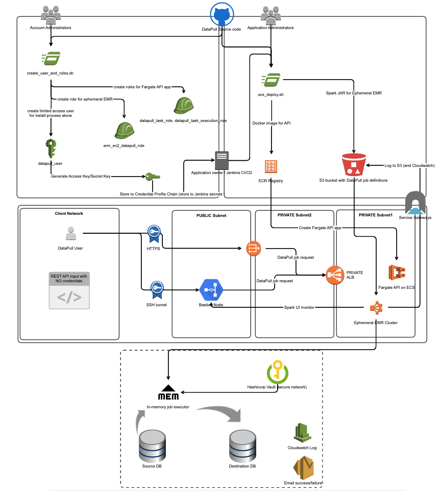

Deploying DataPull on AWS Fargate/ECS and AWS EMR
This document helps you install DataPull on an Amazon AWS account, and run your first DataPull job of converting CSV data in AWS S3 to JSON data.

In a nutshell, deploying DataPull to an AWS Account
- creates three IAM Roles
datapull_task_role,datapull_task_execution_rolefor running the DataPull REST API on AWS Fargateemr_ec2_datapull_rolefor running ephemeral AWS EMR clusters
- creates an IAM User
datapull_usertemporarily for the purpose of installing the following DataPull components- an AWS Fargate service
datapull-web-apiwith an associated image in AWS ECR, and AWS Application Load Balancer (ALB) - an AWS CloudWatch Log Group
datapull_cloudwatch_log_groupand associated log stream
- an AWS Fargate service
- stores DataPull JAR for EMR, job history, EMR logs in an existing AWS S3 bucket
Note:
<xyz>denotes a variable/attribute namedxyzin the DataPull configuration file
Pre-install steps
- Clone/download the master branch of this repo for fargate based install or master_ecs_ec2 branch if you want to do ecs based install.
- Have available, the AWS Profile
<aws_admin_profile>of an IAM user/role that can create IAM users and IAM roles in your AWS account- It is advisable this IAM user/role have admin access to the AWS account. Typically these credentials will be available only to the team managing the AWS account; hence the team deploying DataPull will need to coordinate with the team managing the AWS account.
- Have an S3 bucket
<s3_bucket_name>(this bucket can be an existing bucket or a new bucket) that DataPull will use to store artifacts and logs under the folderdatapull-opensource. The installation will use the name name as the prefix for new resources needed by DataPull, such as ECS service, Application load balancer, etc. - Have available a VPC with ID
<vpc_id>in the AWS region<region> - Have available, two AWS VPC subnet ids
<application_subnet_1>,<application_subnet_2>in the region VPC with ID<vpc_id>accessible to your clients. These subnets should ideally be private subnets, for the sake of security. - Have available a security group with ID
<application_security_group>that either your bastion node is a part of (for SSH-forwarding ports to your client network), or your client network has access to TCP ports 443 (if you wish to serve DataPull API over HTTPS), 8080 (if you wish to serve DataPull API over HTTP), 8088 (to access Spark Application Manager for monitoring DataPull), 20888 (to access Spark UI on EMR master for monitoring DataPull)- if you are using DataPull in a dedicated/new VPC created by following these instructions, please use the ID of the security group
ElasticMapReduce-Master-Private
- if you are using DataPull in a dedicated/new VPC created by following these instructions, please use the ID of the security group
- Have Docker installed on the machine used for deployment
- If you wish to serve the DataPull API over HTTPS (say, at https://datapull.yourdomain.com ), have available
- the ARN
<load_balancer_certificate_arn>of an existing Certificate stored in AWS Certificate Manager that is valid fordatapull.yourdomain.com - the ability to create/modify a CNAME record for
datapull.yourdomain.comto point to the load balancer URL for the DataPull API that will be created later in these instructions.
- the ARN
- Choose which environment
<env>this DataPull deployment is for. Valid environments aredevteststageprod
Pro-tip: Record the values of the variables in the pre-install steps, as a text file. Here is an example (with fake values)...
<aws_admin_profile> : default
<s3_bucket_name> : datatools-datapull
<vpc_id> : vpc-071957e514a1fbd73
<region> : us-west-2
<application_subnet_1> : subnet-04903ae2649294308
<application_subnet_2> : subnet-0e10783af0de2513e
<application_security_group> : sg-08beb77f882d5d2a2
<load_balancer_certificate_arn> : arn:aws:acm:us-west-2:771905877783:certificate/2b1d3729-aa6d-47d5-8902-d0f9e75b35a8
<env> : stage
Installation Steps
Edit master_application_config-\<env>.yml
This file is present in the root directory of the repo.
Required attributes (excluding those with defaulted values)
- datapull.application.region: Put
<region>here - datapull.api.s3_bucket_name: Put
<s3_bucket_name>here - datapull.api.application_subnet_1: Put
<application_subnet_1>here - datapull.api.application_subnet_2: Put
<application_subnet_2>here - datapull.api.application_security_group: Put
<application_security_group>here - datapull.api.vpc_id: Put
<vpc_id>here
Optional attributes
The following attributes need to be specified if you need DataPull to retrieve credentials from Hashicorp Vault to connect to your data stores.
For this functionality to work, you need
- DataPull to run on AWS EMR (this is the default behaviour), or on a Spark cluster whose node(s) run on AWS EC2.
- a Hashicorp Vault cluster whose API is accessible at
(e.g. https://myvault.mydomain.com:8200) - credentials for the database cluster
in the format { "username": "<username>", "password": "<password>" }stored as a static secret at the location<vault_url>/<static_secret_path_prefix>/<cluster>/<username>. For example, if you need DataPull to retrieve the credentials for the usermydbuserof the MySql clustermyclusterfrom the Vault cluster static secret path https://myvaultcluster:8200/v1/secret/mycluster/mydbuser , you will need to store the credentials using the cUrl commandcurl -X POST https://myvaultcluster:8200/v1/secret/mycluster/mydbuser -H 'X-Vault-Token: <valid Vault token>' -d '{ "username": "mydbuser", "password": "<password>" }'- AWS EC2 Auth method set up on the Vault cluster, and the IAM Role of the Spark cluster mapped to a Vault policy that allows it to read the secret at the location
<vault_url>/<static_secret_path_prefix>/<cluster>/<username>
- datapull.secretstore.vault.vault_url: Put
<vault_url>here - datapull.secretstore.vault.vault_nonce: Put a Client nonce here
- datapull.secretstore.vault.static_secret_path_prefix: Put
<static_secret_path_prefix>here - datapull.secretstore.vault.vault_path_login: Put the path to the login url for the AWS EC2 Auth endpoint. e.g.
/v1/auth/<AWS Auth endpoint name>/login
The following attribute needs to set if the DataPull API needs to be served over HTTPS.
- datapull.api.load_balancer_certificate_arn: Put <load_balancer_certificate_arn> here
The following attributes need to be set if you need DataPull to alert you if a job runs for too little time or if it runs too long.
For this functionality, DataPull needs a SQL Server table
<table>in the database<database>on the SQL Server instance<server>; and an SQL Server login<login>with password<password>that can write to this table. If this table does not exist, please create this table with the following schema...
CREATE TABLE [<table>](
[JobId] [nvarchar](max) NULL,
[Portfolio] [nvarchar](max) NULL,
[Product] [nvarchar](max) NULL,
[MasterNode] [nvarchar](max) NULL,
[Ec2Role] [nvarchar](max) NULL,
[elapsedtime] [float] NOT NULL,
[minexecutiontime] [bigint] NOT NULL,
[maxexecutiontime] [bigint] NOT NULL,
[status] [nvarchar](max) NULL,
[InstantNow] [nvarchar](max) NULL,
[processedflag] [bigint] NOT NULL,
[EmailAddress] [nvarchar](max) NULL,
[pipelineName] [nvarchar](max) NULL,
[awsenv] [nvarchar](max) NULL,
[BccEmailAddress] [nvarchar](max) NULL
)
- datapull.logger.mssql.server: Put
<server>here - datapull.logger.mssql.database: Put
<database>here - datapull.logger.mssql.login: Put
<login>here - datapull.logger.mssql.password: Put
<password>here - datapull.logger.mssql.table: Put
<table>here
The following attributes need to be set if you need DataPull to send an email report once each DataPull job completes, from the email address <emailaddress> through the SMTP server/relay <smtpserveraddress>
- datapull.logger.smtp.emailaddress: Put
<emailaddress>here - datapull.logger.smtp.smtpserveraddress: Put
<smtpserveraddress>here
The following attributes need to be set if you need DataPull to send an email report once each DataPull job completes, from the email address <email> using an existing SES instance that is accessiable using the AWS credentials <access_key>/<secret_key>
- datapull.logger.ses.email: Put
<email>here - datapull.logger.ses.access_key: Put
<access_key>here - datapull.logger.ses.secret_key: Put
<secret_key>here
The following attributes need to be set if you wish to run the EMR clusters for DataPull in any other security groups than the default EMR security groups that are created by AWS automatically when an EMR cluster is created
- datapull.emr.emr_security_group_master: Put
<emr_security_group_master>here - datapull.emr.emr_security_group_slave: Put
<emr_security_group_slave>here - datapull.emr.emr_security_group_service_access: Put
<emr_security_group_service_access>here
(optional) Oracle and Teradata support
Please follow the instructions on this wiki to use Oracle and/or Teradata as data sources/destinations for DataPull.
Create DataPull Infrastructure
(optional) Add support for DataPull API to be served over HTTPS
- Edit the file
/api/terraform/datapull_task/datapull_ecs.tf- Update the resource
aws_alb_listenerwith- protocol as
"HTTPS"(instead of"HTTP") - port as
443(instead of8080)
- protocol as
- Update the resource
Create IAM User and Roles, with policies
We recommend team managing the AWS account run this script from a terminal that has the AWS administrator credentials available as a profile
<aws_admin_profile>in the Credential Profile Chain i.e. you should have the AWS credentials set in
- either your
~/.aws/credentialsfile if you're on a Mac- or in your environment variables,
- or you are running this script from an AWS instance with an IAM Role that has administrator privileges </ul
-
From the terminal at the root of the repo, run
cd api/terraform/datapull_iam/chmod +x create_user_and_roles.sh./create_user_and_roles.sh <aws_admin_profile> <s3_bucket_name> <region>
-
The script will create
- IAM Roles needed to run AWS Fargate and EMR
- an IAM User
datapull_userwhose access key and secret key are created as a new AWS profiledatapull_userusing aws configure CLI
The IAM User
datapull_useris used to install the remaining DataPull components like the AWS Fargate Cluster, the API load balancer, etc., so we recommend usingdatapull_userto set up a CI/CD pipeline for the next step.
Create AWS Fargate API App and other AWS resources
- Ensure that there exists an AWS Profile
datapull_usercorresponding to the IAM Userdatapull_usercreated by the previous step > Pro-tip: You can verify this on a Mac by running the terminal commandcat ~/.aws/credentials - From the terminal (assuming you are using the same terminal session as the previous steps), run
cd ../datapull_task/- If you are at the root of the repo, run
cd api/terraform/datapull_task/
- If you are at the root of the repo, run
chmod +x ecs_deploy.sh./ecs_deploy.sh <env>
Browse to the DataPull API Swagger endpoint
- On AWS Console, navigate to
Services > EC2 > Load Balancing > Load Balancers, and record the DNS name for DataPull's ALB (which is named<s3_bucket_name>-api-alb) as<datpull_alb_internal_name>(e.g.internal-datatools-datapull-api-alb-507903794.us-west-2.elb.amazonaws.com) - On your browser, open the API endpoint URL
http://<datpull_alb_internal_name>:8080/swagger-ui.html#!/data45pull45request45handler/startDataPullUsingPOST- If you have selected private subnets for
<application_subnet_1>,<application_subnet_2>, or if these subnets are accessible only through a bastion host, please port-forward<datpull_alb_internal_name>:8080using the terminal commandssh -i "<pem file for your ssh key>" -N -L 8080:<datpull_alb_internal_name>:8080 <bastion user>@<bastion host address>and then open the API endpoint URLhttp://localhost:8080/swagger-ui.html#!/data45pull45request45handler/startDataPullUsingPOST- if you are using a bastion host, please ensure that bastion host is a part of
<application_security_group>(along with other security groups it might need for access from your client network) - if you are a EC2 instance in your public subnet as a poor man's bastion host as described in the AWS Account Setup wiki, then
<bastion user>isec2-userand<bastion host address>is the public IP of the EC2 instance
- if you are using a bastion host, please ensure that bastion host is a part of
- If you have selected private subnets for
Do your first DataPull
- Create a csv file at the S3 location
s3://<s3_bucket_name>/datapull-opensource/data/firstdatapull/source/helloworld.csvwith the following data
hellofield,worldfield
hello,world
- Post the following JSON input to the API endpoint url
http://<datpull_alb_internal_name>:8080/swagger-ui.html#!/data45pull45request45handler/startDataPullUsingPOST.- Please remember to replace
<your_id@DOMAIN.com>and<s3_bucket_name>with valid data.
- Please remember to replace
{
"useremailaddress": "<your_id@DOMAIN.com>",
"precisecounts": true,
"migrations": [
{
"sources": [
{
"platform": "s3",
"s3path": "<s3_bucket_name>/datapull-opensource/data/firstdatapull/source",
"fileformat": "csv",
"savemode": "Overwrite"
}
],
"destination": {
"platform": "s3",
"s3path": "<s3_bucket_name>/datapull-opensource/data/firstdatapull/destination",
"fileformat": "json",
"savemode": "Overwrite"
}
}
],
"cluster": {
"pipelinename": "firstdatapull",
"awsenv": "dev",
"portfolio": "Data Engineering Services",
"terminateclusterafterexecution": "true",
"product": "Data Engineering Data Tools",
"ComponentInfo": "00000000-0000-0000-0000-000000000000"
}
}
- In approximately 8 minutes (to account for the time taken for the ephemeral EMR cluster to spin up), you should get the data from the CSV converted into JSON and written to the S3 folder
s3://<s3_bucket_name>/datapull-opensource/data/firstdatapull/destination/ - The logs for each DataPull invocation are available at
s3://<s3_bucket_name>/datapull-opensource/logs/DataPullHistory. The logs for each migration with DataPull invocations are available ats3://<s3_bucket_name>/datapull-opensource/logs/MigrationHistory - If you had configured the anonymous SMTP server for DataPull to send you email reports, you would get an email report with the subject
DataPull Report - firstdatapull (application_<random_numbers>) - While the ephemeral EMR cluster is in the
Runningstatus, you can monitor the progress of the Spark job by browsing to the Spark UI athttp://<ip of master node of EMR cluster>:8088. Please read this wiki for more information- If you have selected a private subnet for
<application_subnet_1>or if this subnet is accessible only through a bastion host, please port-forward<ip of master node of EMR cluster>:8088and<ip of master node of EMR cluster>:20888using the terminal commandssh -i "<pem file for your ssh key>" -N -L 8088:<ip of master node of EMR cluster>:8088 -L 20888:<ip of master node of EMR cluster>:20888 <bastion user>@<bastion host address>and then open the API endpoint URL http://localhost:8088
- If you have selected a private subnet for